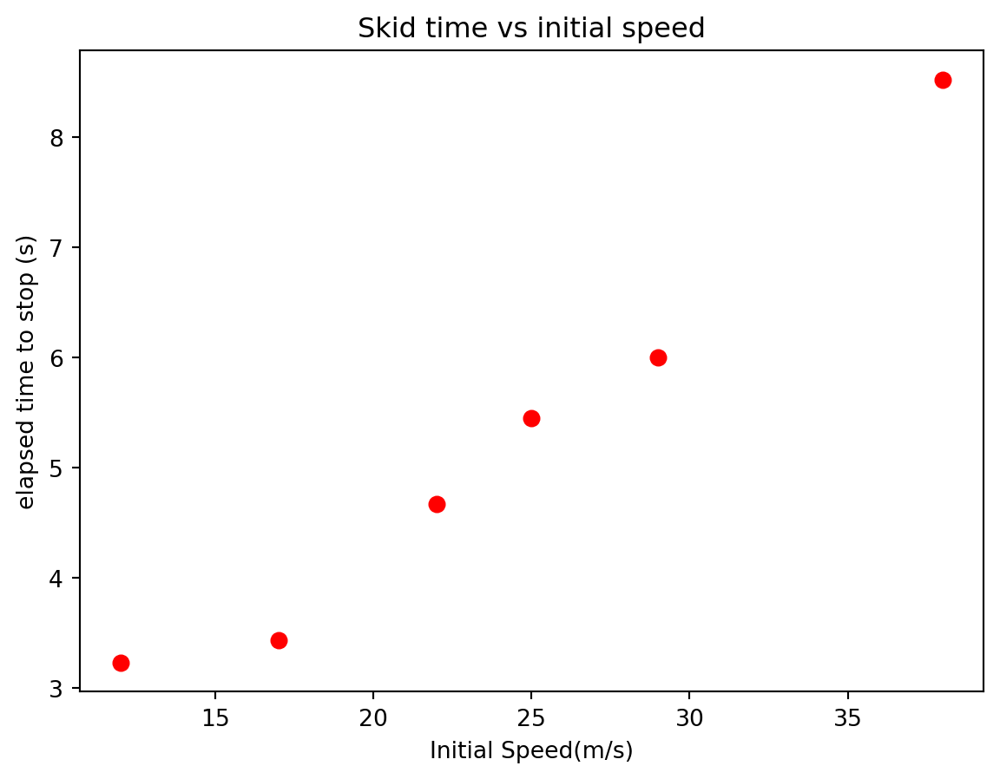
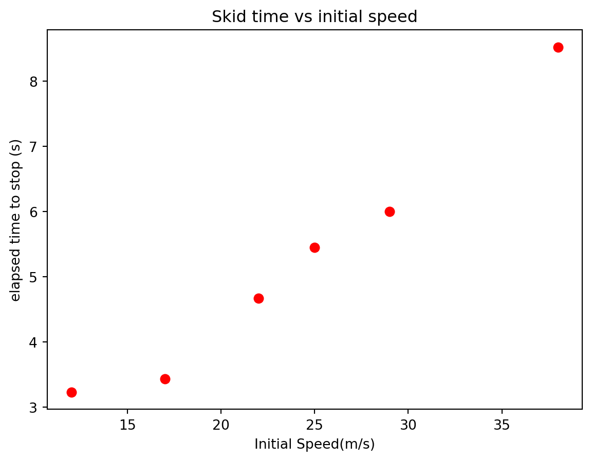
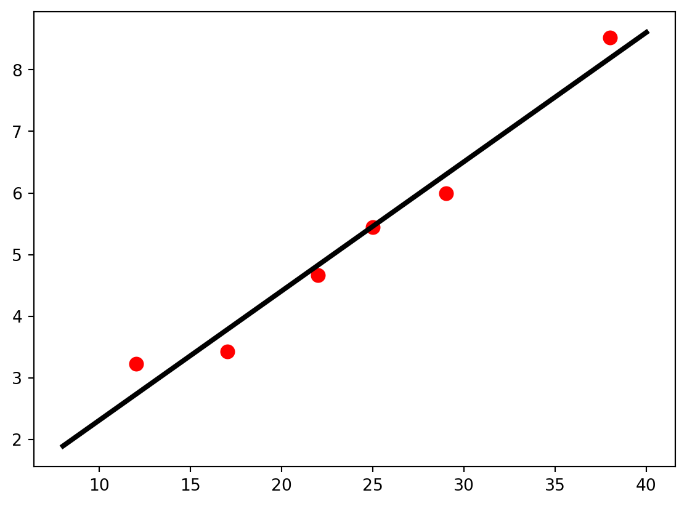
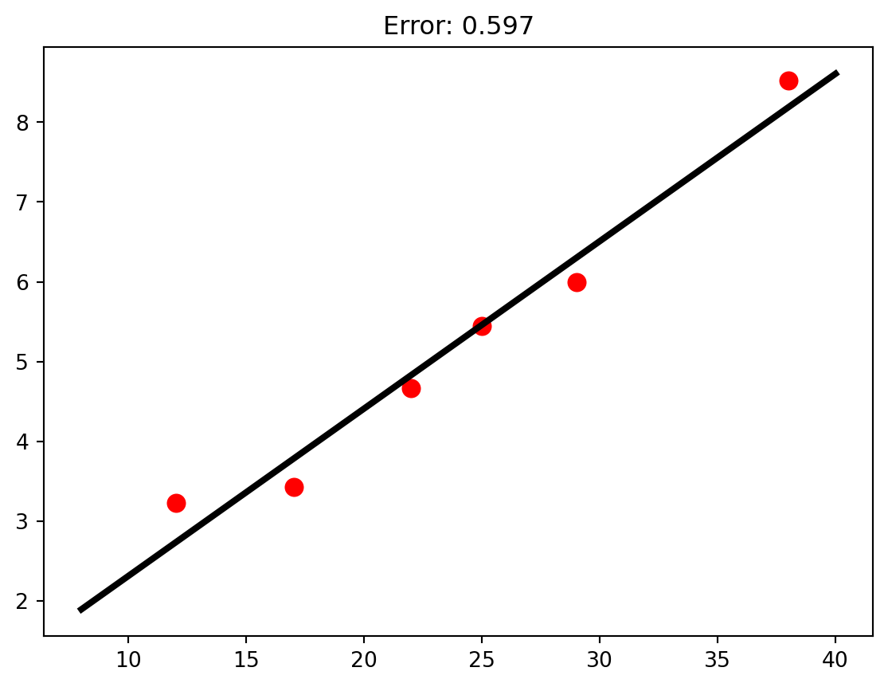
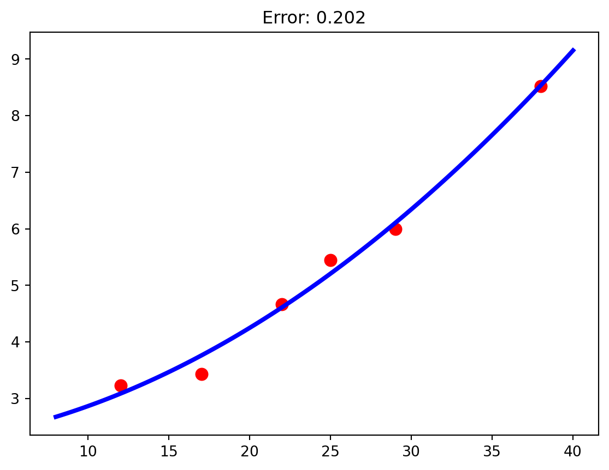
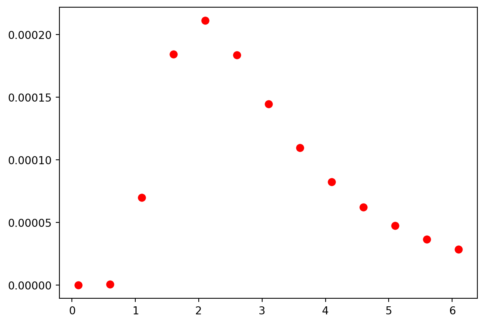
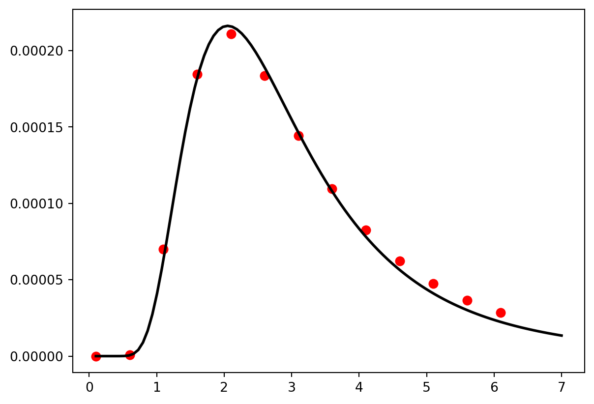
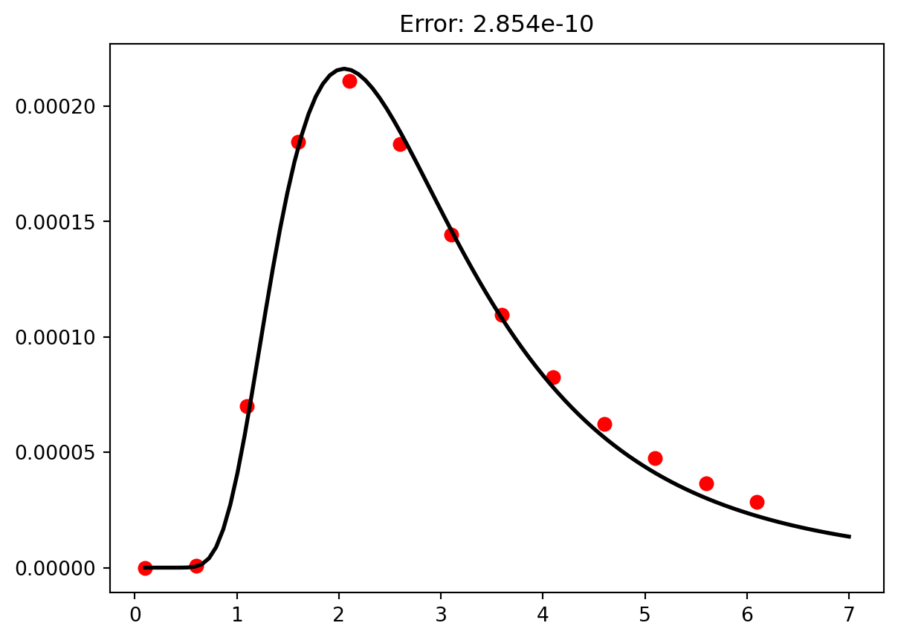
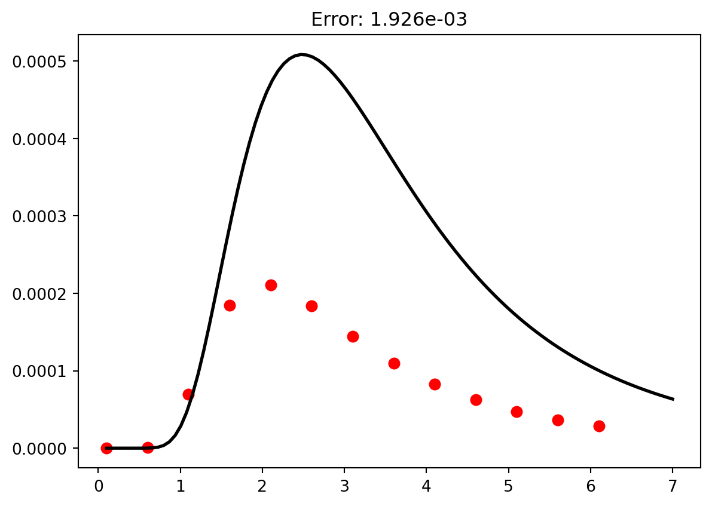

Text(0.5, 1.0, 'Skid time vs initial speed')
Often in science you will gather data as a way to explore the relationship between two physical quantities and/or to validate your theories. For example, perhaps you are interested how the amount of fertilizer applied to your tomato plants affect the final size of the fruit. Or maybe you want to know how a planet’s distance from the sun affects it’s orbital period. Investigating these kinds of questions are the very essence of science and great scientific discoveries begin with simple questions posed by curious minds. As a brief reminder, the steps to the scientific process are:
1. Formulate a question.
2. Form a hypothesis.
3. Use your hypothesis to make a prediction.
4. Test your prediction.
5. Analyze the results and fine tune your theory.
The process of gathering data and analyzing it, hoping to draw conclusions and establish physical laws are what steps 4 and 5 are all about. One computational tool that will help you establish firm relationships is called curve fitting. Curve fitting is the process of finding a function that matches your data as closely as possible. Finding a best-fit function that agrees with your hypothesis can be a valuable step in verifying or proving a theory. Other useful mathematical conclusions can be drawn from it as well.
As a simple example consider the stopping time for a car with its brakes locked up (most modern cars are designed to prevent this). The question is: How does the stopping time depend on the car’s initial speed. If you are familiar with Newtonian mechanics at all, you might hypothesize that the acceleration of the car should not depend on the initial velocity and hence the stopping time will increase linearly with the initial speed. Furthermore, the following kinematic equation
\[
\begin{align*}
v_f &= v_i - a \Delta t\\
0 &= v_i - \mu_k g \Delta t\\
\Delta t &= {v_i\over \mu_k g}
\end{align*}
\] would suggest that the slope of \(\Delta t\) vs. \(v_i\) function is \({1\over a} = {1\over \mu g}\). In other words, the theory of kinematics suggest that the acceleration should be independent of initial speed. To prove your idea, you should first measure the stopping time for cars with a variety of initial speeds (shown below).
| Initial Speed (m/s) | Skid time (s) |
|---|---|
| 12 | 3.23 |
| 17 | 3.43 |
| 22 | 4.67 |
| 25 | 5.45 |
| 29 | 6.00 |
| 38 | 8.52 |
Text(0.5, 1.0, 'Skid time vs initial speed')
We notice that the data looks linear which matches our hypothesis that the acceleration is constant.
The next thing to do is to find the line that passes through the data points as close as possible. When the fit function is a polynomial , we can use the polyfit function from numpy. This function takes three argument: the independent data set, the dependent data set, and the order of the polynomial
polyfit(x,y,order)The polyfit function returns a list of numbers containing the function parameters for the best fit function.
from matplotlib import pyplot as plt
from numpy import polyfit
t = [3.23,3.43,4.67,5.45,6,8.52]
vi = [12,17,22,25,29,38]
params = polyfit(vi,t,1)
slope = params[0]
yint = params[1]
g=9.8 #Acceleration due to gravity
mu = 1/(slope * g)
print(params)
print(mu)[0.20971747 0.21840032]
0.4865632640669638In this case, \(0.2097\) is the slope of the best-fit function and \(0.2184\) is the y-intercept of the best fit function. Remembering our theory from above, we notice that the slope of this fit function can be used to calculate the coefficient of friction between the rubber tires and the roadway. \[ \begin{align*} m &= {1\over \mu g}\\ \mu &= {1\over m g} \end{align*} \] It is often useful to plot the fit function on top of the data to verify that it really matches the data.
from matplotlib import pyplot as plt
from numpy import polyfit,linspace
t = [3.23,3.43,4.67,5.45,6,8.52]
vi = [12,17,22,25,29,38]
params = polyfit(vi,t,1)
vDense = linspace(8,40,100)
tDense = params[0] * vDense + params[1]
plt.plot(vi,t,'r.',ms = 16)
plt.plot(vDense,tDense,'k',lw = 3)
Sometimes it might not be clear what type of function you should fit to. A good way to measure the quality of a fit it so sum the square of the difference between the fit function and the data. \[
\sum_i (y_i - f(x_i))^2
\] You can make polyfit do this for you using the full = True keyword argument. Now the function will return a list of 5 things: the first is the list of fitting parameters and the second thing is the sum of the square of the errors. Fits with big values for this sum are not as good as those with lower values.
from matplotlib import pyplot as plt
from numpy import polyfit,linspace
t = [3.23,3.43,4.67,5.45,6,8.52]
vi = [12,17,22,25,29,38]
paramsLinear = polyfit(vi,t,1,full=True)
paramsQuadratic = polyfit(vi,t,2,full=True)
vDense = linspace(8,40,100)
tDenseLinear = paramsLinear[0][0] * vDense + paramsLinear[0][1]
tDenseQuadratic = paramsQuadratic[0][0] * vDense**2 + paramsQuadratic[0][1] * vDense + paramsQuadratic[0][2]
errorLinear = paramsLinear[1][0]
errorQuadratic = paramsQuadratic[1][0]
plt.plot(vi,t,'r.',ms = 16)
plt.plot(vDense,tDenseLinear,'k',lw = 3)
plt.title(f"Error: {errorLinear:1.3f}")
plt.show()
plt.plot(vi,t,'r.',ms = 16)
plt.plot(vDense,tDenseQuadratic,'b',lw = 3)
plt.title(f"Error: {errorQuadratic:1.3f}")
plt.show()

If the fit function is a polynomial, polyfit is a great choice but there are times when the hypothesized functions is not a polynomial. In cases like this, the function scipy.optimize.curve_fit should work. As an example, let’s say that you have the following intensity vs. wavelength data.

If you suspected that the fit function looked like this \[I(\lambda) = a \lambda^{-5} {1\over \exp{b\over \lambda} - 1}\], you could find the values of a and b that made the function fit the data like this:
from scipy.optimize import curve_fit
from matplotlib import pyplot as plt
from numpy import exp,log
def fit_function(wvlength,a,b):
return a * wvlength**-5 * 1/(exp(b/wvlength) + 1)
wavelength = [0.1, 0.6, 1.1, 1.6, 2.1, 2.6, 3.1, 3.6, 4.1, 4.6, 5.1, 5.6, 6.1]
intensity = [0, 7.43023e-7, 0.0000699768, 0.000184459, \
0.000211137, 0.000183716, 0.000144493, 0.000109646, 0.0000825034, \
0.0000623056, 0.0000474756, 0.0000365799, 0.0000285178]
params = curve_fit(fit_function,wavelength,intensity)
print(params)
wDense = linspace(0.1,7,100)
iDense = params[0][0] * wDense**-5 * 1/(exp(params[0][1]/wDense) + 1)
plt.plot(wavelength,intensity,'r.',ms = 13)
plt.plot(wDense,iDense,'k',lw = 2)(array([ 1.21509047, 10.32796788]), array([[0.00225532, 0.0038109 ],
[0.0038109 , 0.00717859]]))
Notice that the curve_fit function returns more than just the fit paramters. It also returns a \(2\) x \(2\) matrix containing the uncertainties on the fit parameters. If you want to calculate the fit error, you’ll have to do it manually, using the equation \[
\sum_i (y_i - f(x_i))^2
\]
from scipy.optimize import curve_fit
from matplotlib import pyplot as plt
from numpy import exp,log,diagonal,sqrt,array
def fit_function(wvlength,a,b):
return a * wvlength**-5 * 1/(exp(b/wvlength) + 1)
def fit_function_two(wvlength,a,b):
return a * wvlength**-5 * 1/(exp(b/wvlength) - 1)
wavelength = array([0.1, 0.6, 1.1, 1.6, 2.1, 2.6, 3.1, 3.6, 4.1, 4.6, 5.1, 5.6, 6.1])
intensity = array([0, 7.43023e-7, 0.0000699768, 0.000184459, 0.000211137, 0.000183716, 0.000144493, 0.000109646, 0.0000825034, 0.0000623056, 0.0000474756, 0.0000365799, 0.0000285178])
paramsOne = curve_fit(fit_function,wavelength,intensity)
paramsTwo = curve_fit(fit_function_two,wavelength,intensity)
wDense = linspace(0.1,7,100)
iDenseOne = fit_function(wDense,paramsOne[0][0],paramsOne[0][1])
iDenseTwo = fit_function_two(wDense,paramsTwo[0][0],paramsTwo[0][1])
errorOne = sum((intensity - fit_function(wavelength,paramsOne[0][0],paramsOne[0][1]))**2 )
errorTwo = sum( (intensity - fit_function_two(wavelength,paramsTwo[0][0],paramsTwo[0][1]))**2 )
plt.plot(wavelength,intensity,'r.',ms = 13)
plt.plot(wDense,iDenseOne,'k',lw = 2)
plt.title(f"Error: {errorOne:1.3e}")
plt.show()
plt.plot(wavelength,intensity,'r.',ms = 13)
plt.plot(wDense,iDenseTwo,'k',lw = 2)
plt.title(f"Error: {errorTwo:1.3e}")
plt.show()

polyfit function?curve_fit function?You push a box with five known forces while using a motion detector to measure the cart’s acceleration. The data are shown below.
| Force (N) | acceleration (m/s) |
|---|---|
| 0.25 | 0.5 |
| 0.50 | 0.8 |
| 0.75 | 1.3 |
| 1.0 | 1.8 |
| 1.25 | 2.1 |
# Solution Here| Time (s) | Position (m) |
|---|---|
| 0.0 | 0.256 |
| 0.1 | 0.249 |
| 0.2 | 0.195 |
| 0.3 | 0.514 |
| 0.4 | 0.538 |
| 0.5 | 0.785 |
| 0.6 | 1.11 |
| 0.7 | 1.31 |
| 0.8 | 1.81 |
| 0.9 | 2.32 |
| 1.0 | 2.74 |
# Solution Here| Time (s) | Velocity (m/s) |
|---|---|
| 0 | 0 |
| 10 | 23 |
| 20 | 46 |
| 30 | 69 |
# Solution HereFor your experiment you compress a cylinder of gas four different times and measure the temperature of the gas.
| Volume (m\(^3\)) | Temperature (\(^\circ\) C) |
|---|---|
| 0.481 | 35 |
| 0.412 | 68 |
| 0.347 | 110 |
| 0.299 | 150 |
# Solution Here